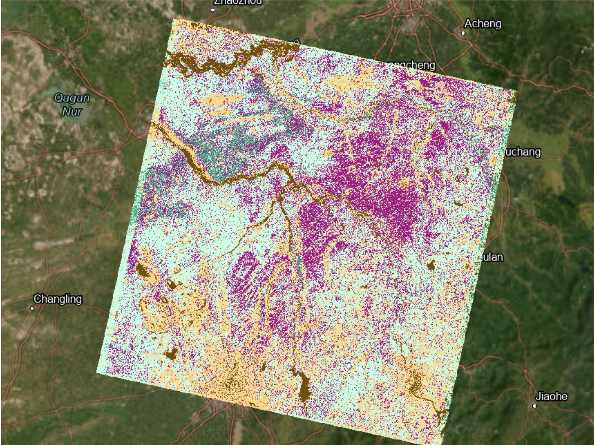

Projects

OSINT · Security Analysis
China OSINT Practicum — Military Food Security
Open-source intelligence analysis examining food security indicators as potential signals of Taiwan invasion preparation. Presented to Army OSINT officials and the Center for Anticipatory Intelligence Research Symposium.

Urban GIS · Accessibility
ACCESS Bicycle Comfortability
Spatial analysis tool assessing bicycle infrastructure comfort and accessibility using local GIS layers. Presented at the Utah Geographic Information Council Annual Meeting (May 2025).

🛰️Remote Sensing · Landsat
Water & Vegetation Health — Dongbei Region, China
Landsat-based analysis of water bodies and vegetation health indices across China's Dongbei region, published as an interactive ArcGIS StoryMap.
⚓
Spatial Analysis · R
Maritime Pirate Attacks — Geospatial Analysis in R
Statistical and spatial analysis of global maritime piracy incident data in R, identifying attack hotspots and temporal patterns.